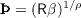
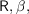
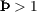
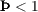

5The Old English letter , which conveniently looks something like a combination of  and , is used to designate the ‘absolute patience factor’ which determines whether consumption will rise (), stay the same (), or fall () in the perfect foresight problem (PerfForesightCRRA). Terms like this are all defined in Carroll (2011) and citations to that paper will henceforth be omitted when new terms are introduced, on the understanding that the reader knows to see Carroll (2011) for further definition and discussion.